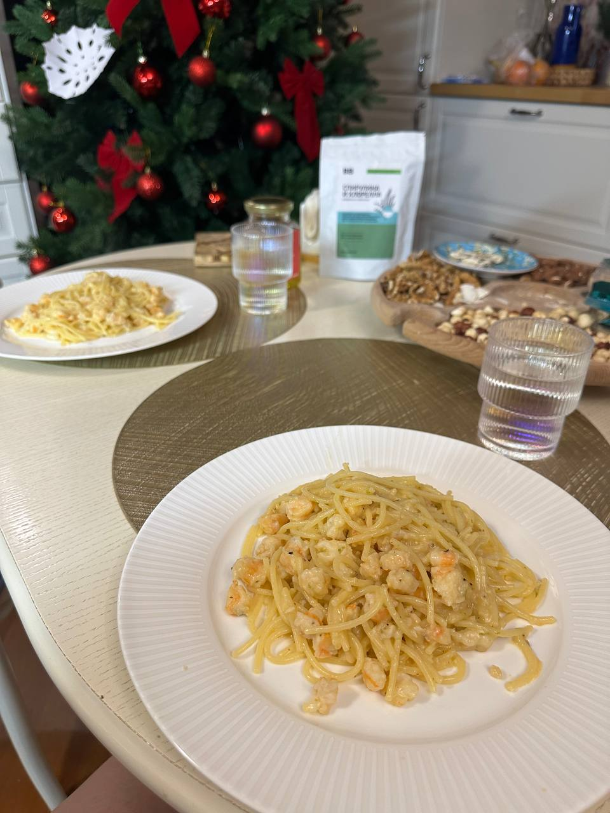

Главная
Карта блюд
Блюдо
Профиль

Паста с креветками
Ингредиенты:
Паста - 200 г.
Креветки - 500 г.
Лайм - 1/2 шт.
Лайм - 1/2 шт.
Соль, перец по вкусу
Рецепт:
Нарежьте овощи.
Взбейте яйца.
Обжарьте овощи на сковороде.
Добавьте яйца и готовьте до готовности.